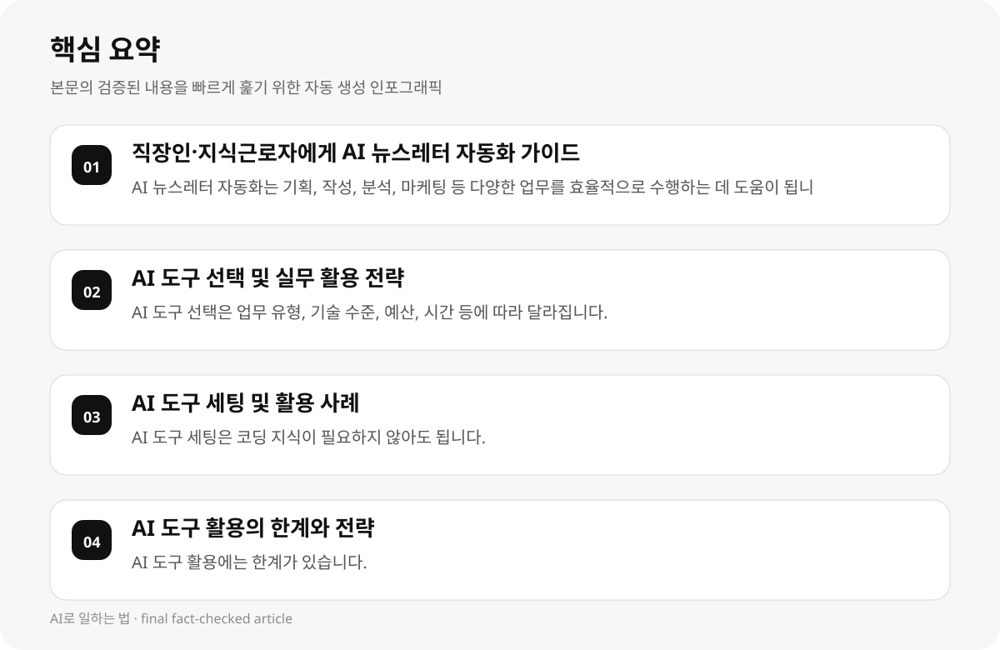

직장인·지식근로자에게 AI 뉴스레터 자동화 가이드 #
2026년 현재, 직장인 10명 중 6명이 AI 도구를 활용하고 있으며, 주당 평균 8.4시간을 절약하고 있습니다. 이는 AI 도구의 실용성과 효율성에 대한 증거입니다. 그러나 AI 뉴스레터 자동화를 실전 적용할 때는 도구 선택, 세팅, 활용 전략 등 다양한 고려 사항이 필요합니다.
AI 뉴스레터 자동화는 기획, 작성, 분석, 마케팅 등 다양한 업무를 효율적으로 수행하는 데 도움이 됩니다. 하지만 AI 도구를 사용할 때는 코딩 지식이 필요하지 않아도 됩니다. 이 글에서는 2026년 직장인 AI 업무 자동화 도구 10가지 추천 및 실무 활용 사례를 설명합니다.
- AI 뉴스레터 자동화는 기획, 작성, 분석, 마케팅 등 다양한 업무를 효율적으로 수행하는 데 도움이 됩니다.
- 2026년 직장인 AI 업무 자동화 도구 10가지 중 어떤 도구를 먼저 사용해야 하나요? AI 도구를 무료로 사용해도 효과가 있나요?
AI 도구 선택 및 실무 활용 전략 #
AI 도구 선택은 업무 유형, 기술 수준, 예산, 시간 등에 따라 달라집니다. 문서 작성, 회의 정리, 자동화 업무 등에 적합한 도구를 선택하는 것이 중요합니다.
Zapier와 Make 중 직장인 업무 자동화에 어떤 도구가 더 적합한지, ChatGPT와 Claude 중 어떤 도구가 더 나은지 비교해 주세요. 이는 실무 활용 전략을 정립하는 데 도움이 됩니다.
- AI 도구 선택은 업무 유형, 기술 수준, 예산, 시간 등에 따라 달라집니다.
- Zapier와 Make 중 직장인 업무 자동화에 어떤 도구가 더 적합한지, ChatGPT와 Claude 중 어떤 도구가 더 나은지 비교해 주세요.
AI 도구 세팅 및 활용 사례 #
AI 도구 세팅은 코딩 지식이 필요하지 않아도 됩니다. 기획서 초안 작성, 이메일 초안, 회의 안건 정리 등 텍스트 기반 업무 전반에 활용할 수 있습니다.
2026년 직장인 AI 업무 자동화 도구 10가지 중 가장 범용적인 도구는 ChatGPT입니다. 이는 기획서 초안 작성, 이메일 초안, 회의 안건 정리 등 텍스트 기반 업무 전반에 활용됩니다.
- AI 도구 세팅은 코딩 지식이 필요하지 않아도 됩니다.
- 2026년 직장인 AI 업무 자동화 도구 10가지 중 가장 범용적인 도구는 ChatGPT입니다.

AI 도구 활용의 한계와 전략 #
AI 도구 활용에는 한계가 있습니다. AI 도구 사용료는 변동 가능하며, 실무 활용에 따라 도구 선택이 중요합니다. 그러나 대부분의 AI 도구는 코딩 지식이 필요하지 않습니다.
AI 도구 활용 전략은 업무 유형, 기술 수준, 예산, 시간 등에 따라 달라집니다. 이는 실무 활용을 최적화하는 데 도움이 됩니다.
- AI 도구 활용에는 한계가 있습니다.
- AI 도구 활용 전략은 업무 유형, 기술 수준, 예산, 시간 등에 따라 달라집니다.
AI 뉴스레터 자동화 가이드 #
AI 뉴스레터 자동화는 기획, 작성, 분석, 마케팅 등 다양한 업무를 효율적으로 수행하는 데 도움이 됩니다. 이는 직장인과 지식근로자가 업무 효율성과 비용 절감을 실현하는 데 도움이 됩니다.
AI 뉴스레터 자동화 가이드는 실무 활용 사례와 전략을 제공합니다. 이는 AI 도구 사용의 전략을 정립하는 데 도움이 됩니다.
- AI 뉴스레터 자동화는 기획, 작성, 분석, 마케팅 등 다양한 업무를 효율적으로 수행하는 데 도움이 됩니다.
- AI 뉴스레터 자동화 가이드는 실무 활용 사례와 전략을 제공합니다.
AI 도구 활용의 성공 사례 #
2026년 직장인 AI 업무 자동화 도구 10가지 중 가장 효과적인 도구는 ChatGPT입니다. 이는 기획서 초안 작성, 이메일 초안, 회의 안건 정리 등 텍스트 기반 업무 전반에 활용됩니다.
AI 도구 활용의 성공 사례는 업무 효율성과 비용 절감을 실현하는 데 도움이 됩니다.
- 2026년 직장인 AI 업무 자동화 도구 10가지 중 가장 효과적인 도구는 ChatGPT입니다.
- AI 도구 활용의 성공 사례는 업무 효율성과 비용 절감을 실현하는 데 도움이 됩니다.
AI 도구 활용의 실패 사례 #
AI 도구 활용의 실패 사례는 업무 효율성과 비용 절감을 실현하지 못하는 데 이어집니다. 이는 AI 도구 사용 전략의 부족, 업무 유형의 적합성 부족 등에 기인합니다.
AI 도구 활용의 실패 사례는 실무 활용 전략의 부족, 업무 유형의 적합성 부족 등에 기인합니다.
- AI 도구 활용의 실패 사례는 업무 효율성과 비용 절감을 실현하지 못하는 데 이어집니다.
- AI 도구 활용의 실패 사례는 실무 활용 전략의 부족, 업무 유형의 적합성 부족 등에 기인합니다.
AI 도구 활용의 전략 및 제안 #
AI 도구 활용 전략은 업무 유형, 기술 수준, 예산, 시간 등에 따라 달라집니다. 이는 실무 활용을 최적화하는 데 도움이 됩니다.
AI 도구 활용 전략은 업무 유형, 기술 수준, 예산, 시간 등에 따라 달라집니다.
- AI 도구 활용 전략은 업무 유형, 기술 수준, 예산, 시간 등에 따라 달라집니다.
- AI 도구 활용 전략은 실무 활용을 최적화하는 데 도움이 됩니다.